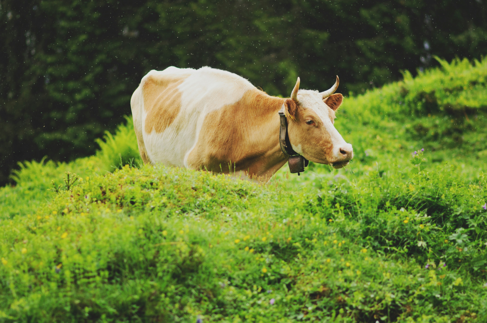

Breeds of Cows
- Angus
- Hereford
- Charolais
- Simmental
- Limousin
The Aberdeen Angus, sometimes simply Angus, is a Scottish breed of small beef cattle. It derives from cattle native to the counties of Aberdeen, Banff, Kincardine and Angus in north-eastern Scotland. In 2018 the breed accounted for over 17% of the beef production in the United Kingdom.
The Angus is naturally polled and solid black or red the udder may be white.The cattle have been exported to many countries of the world; there are large populations in Australia, Canada, New Zealand, South America and the United States, where it has developed into two separate and distinct breeds, the American Angus and Red Angus. In some countries it has been bred to be taller than the native Scottish stock. Its conservation status worldwide is "not at risk"in the United Kingdom the original Native Aberdeen Angus – cattle not influenced by cross-breeding with imported stock – is listed by the Rare Breeds Survival Trust as "at risk".
The Hereford is a British breed of beef cattle originally from Herefordshire in the West Midlands of England.It was the result of selective breeding from the mid-eighteenth century by a few families in Herefordshire, beginning some decades before the noted work of Robert Bakewell.
It has spread to many countries; in 2023 the populations reported by 62 countries totalled over seven million head; populations of over 100000 were reported by Uruguay, Brazil and Chile.The breed reached Ireland in 1775, and a few went to Kentucky in the United States in 1817; the modern American Hereford derives from a herd established in 1840 in Albany, New York.It was present in Australia before 1850, and in Argentina from 1858. In the twenty-first century there are breed societies in those countries and in the Czech Republic, Denmark, Estonia, France, Hungary, the Netherlands, Norway, Portugal, Spain and Sweden in Europe; in Brazil, Chile, Paraguay and Uruguay in South America; in New Zealand; and in South Africa.
The Charolais is a breed of taurine beef cattle from the Charolais area surrounding Charolles, in Burgundy, in eastern France. Charolais are raised for meat; they may be crossed with other breeds, including Angus and Hereford cattle. The Charolais is the second-most common cattle breed in France after the Holstein and the most common beef breed, ahead of the Limousin. France had 4.22 million head of Charolais cattle as of 2018, including 1.56 million cows.
Charolais are raised for meat; they may be crossed with other breeds, including Angus and Hereford cattle.

The Simmental or Swiss Fleckvieh is a Swiss breed of dual-purpose cattle. It is named after the Simmental – the valley of the Simme river – in the Bernese Oberland, in the canton of Bern in Switzerland. It is reddish in colour with white markings, and is raised for both milk and meat. It is among the oldest and most widely distributed cattle breeds in the world; it is recorded as present in the valleys of the Simme, Saane (Sarine) and the Gürbe already in the 13th century. It is the second-most common cattle breed in Switzerland, after the Brown Swiss; in 2018 there were 705000 head registered in the herd-book, and a total population of 1.2 million.
The Limousin is a French breed of beef cattle from the Limousin and Marche regions of France. It was formerly used mainly as a draught animal, but in modern times is reared for beef. A herd-book was established in France in 1886. Apart from the French national herd, there are smaller populations in many other countries. It is the second-most numerous beef breed in France after the Charolais and the second-most numerous beef breed in the United States after the Angus. It is also the second-most numerous beef breed in Australia and in Ireland, and the third-most numerous in Canada.